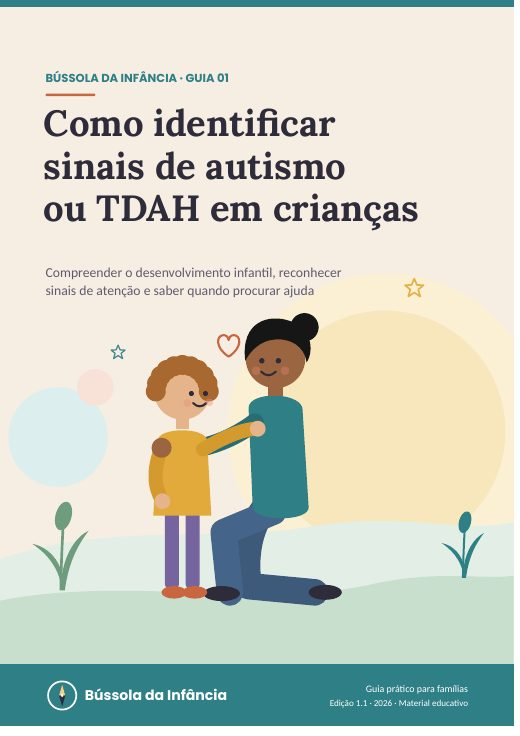
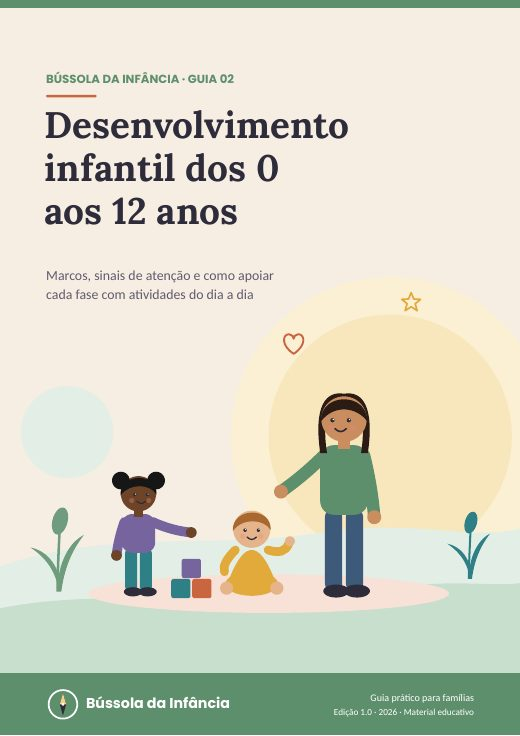
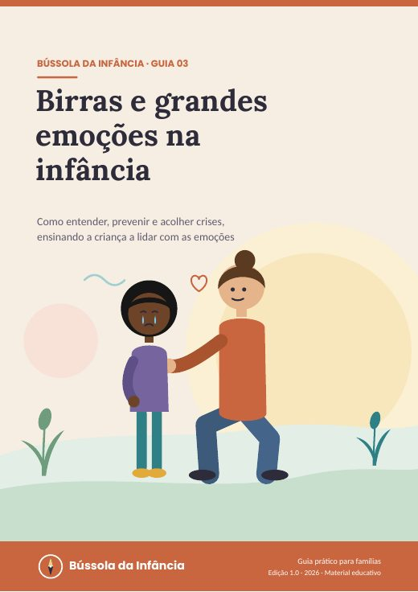
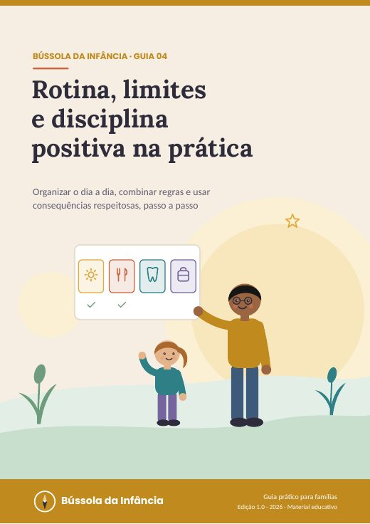
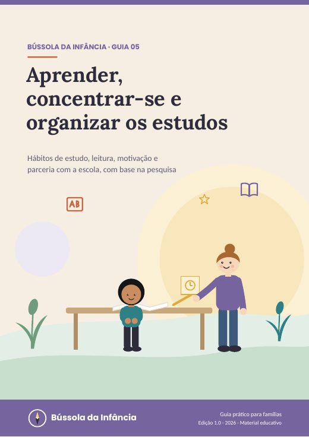
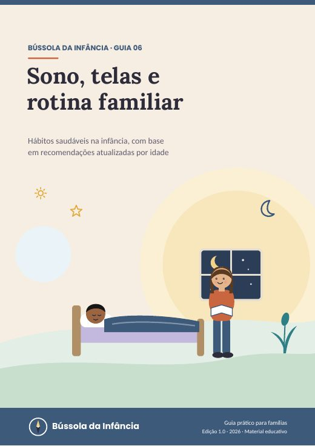
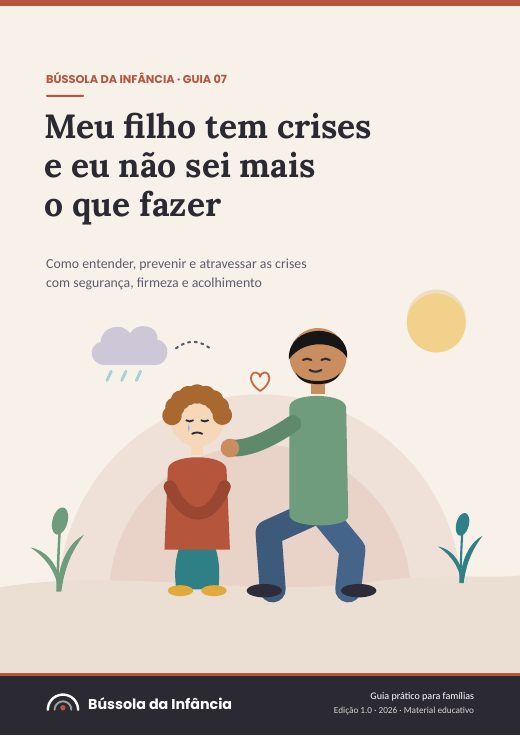
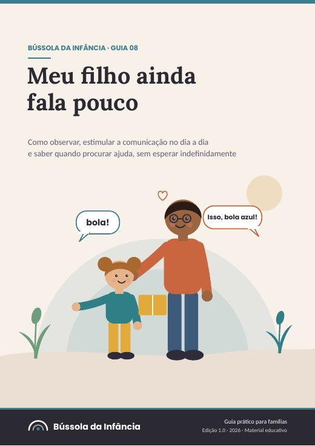
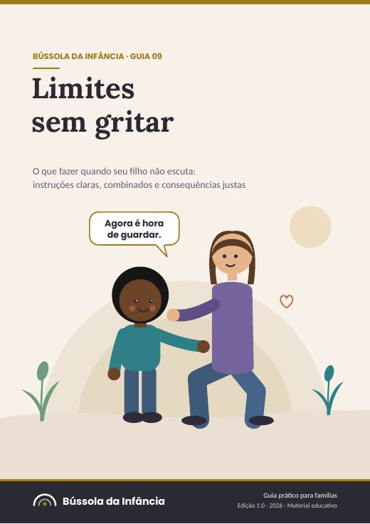
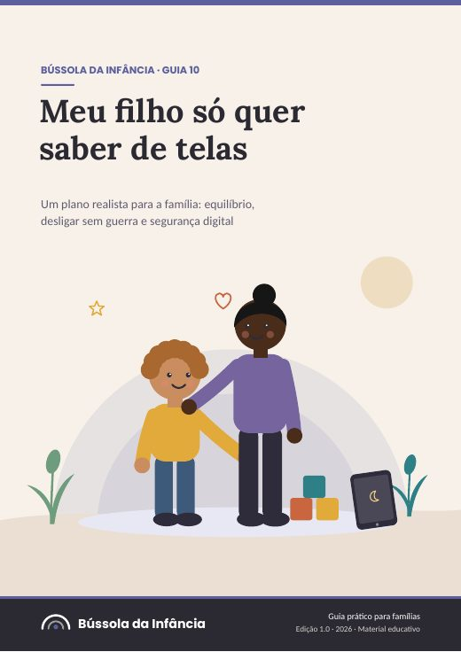

Guias para pais e cuidadores de crianças de 0 a 12 anos. Linguagem simples, fontes citadas, sem promessas e sem culpa.
Grátis: roteiro para o momento da crise + diário de 7 dias
4 guias para crises, fala, limites e telas por R$ 97,00









